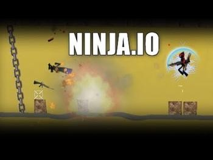
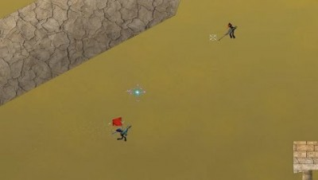
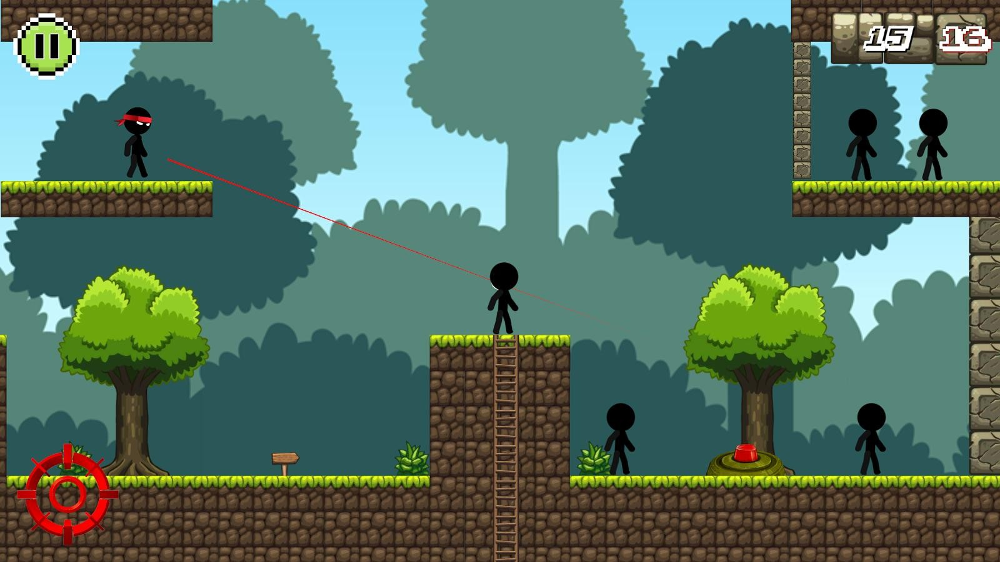

Ninja.io is a fast-paced multiplayer stickman shooter that puts you in the shoes of an agile ninja warrior. With 15 main weapons, 6 secondary options, and multiple game modes, mastering this game requires both quick reflexes and smart strategy. Whether you are new to the arena or looking to climb the leaderboard, this complete guide covers everything you need to dominate.
Game Overview
Ninja.io combines the accessibility of a stickman art style with surprisingly deep combat mechanics. You play as a nimble ninja character navigating 2D platform-based arenas, engaging in real-time multiplayer battles against players worldwide. The game's simplicity in visuals belies its tactical depth — positioning, weapon selection, and movement timing are the keys to victory.

Controls & Basic Mechanics
Before diving into strategies, master the core controls:
- WASD / Arrow Keys — Move your ninja character
- Mouse — Aim your weapon
- Left Click — Fire/shoot
- Spacebar — Jump (double jump available)
- Shift — Dash/sprint for quick repositioning
- Number Keys (1-3) — Quick weapon swap
The movement system rewards precision. Crouching reduces your hitbox, making you harder to hit during firefights. Double jumping allows you to reach elevated platforms and dodge incoming projectiles mid-air.
Weapons Guide
Ninja.io features an arsenal of 15 main weapons and 6 secondary options. Here is a breakdown of the most important ones:
Primary Weapons
- 🗡️ Katana — High-damage melee weapon with fast swing speed. Best for close-quarters ambushes. Can deflect projectiles with perfect timing.
- 🏹 Bow & Arrow — Silent ranged weapon with medium damage. Arrows travel in an arc, requiring leading your shots. Excellent for picking off enemies at distance.
- 🔫 Shotgun — Devastating at close range with spread shot. Slow reload speed makes missed shots costly. Pair with dash movement for hit-and-run tactics.
- 💣 Rocket Launcher — Explosive area damage weapon. Effective against grouped enemies and for denying area control. Self-damage is possible — watch your positioning.
- 🔫 SMG — High fire rate with moderate damage per bullet. Best for sustained fire at medium range. Control recoil by firing in short bursts.
- 🎯 Sniper Rifle — One-shot kills to the body at full health. Requires precise aim but rewards patience. Ideal for holding long sightlines.
- ⭐ Shuriken — Fast throwable projectile with low damage but high speed. Can be thrown rapidly to pressure opponents. Great for finishing low-health targets.
Secondary Weapons & Items
- 💨 Smoke Bomb — Creates a visibility-denying cloud. Essential for escapes and repositioning during fights.
- 🧨 Grenade — Bouncing explosive for flushing enemies from cover.
- ⚡ Speed Boost — Temporary movement speed increase for aggressive pushes or escapes.
- 🛡️ Shield — Absorbs incoming damage for a short duration.

Game Modes
Deathmatch (FFA)
The classic free-for-all mode where every ninja fights for themselves. Your goal is to rack up the most kills before time runs out. Key strategies:
- Stay mobile — never camp in one spot for too long
- Let weaker players fight first, then clean up survivors
- Control weapon spawn points for loadout advantage
- Use verticality to your advantage — high ground equals better sightlines
Team Deathmatch
Work with your team to outscore the opposition. Coordination is crucial here:
- Stick with at least one teammate — solo pushes get you killed
- Communicate enemy positions when possible
- Balance your team's weapon loadouts (don't all pick the same weapon)
- Focus fire on the enemy's top scorer to reduce their momentum
Capture the Flag (CTF)
The most tactical mode in Ninja.io. Your team must infiltrate the enemy base, grab their flag, and return it to yours:
- Assign roles: attackers (flag carriers), defenders (base guards), and roamers
- Use smoke bombs to cover flag retrieval runs
- Defenders should position near the flag with shotguns or SMGs for close-range defense
- The flag carrier moves slower — teammates must clear the path ahead

Advanced Movement Techniques
Movement is what separates beginners from pros in Ninja.io:
- Jump Shot — Fire while jumping to make yourself a harder target. Your shots still travel straight, but your unpredictable position throws off enemies.
- Dash Cancel — Use dash mid-jump to change direction instantly. This makes you nearly impossible to hit with projectile weapons.
- Wall Bounce — Jump toward a wall and dash off it to reach unexpected angles. Great for flanking enemies who expect a direct approach.
- Crouch Slide — Slide while crouching to move quickly through open areas while maintaining a smaller hitbox.
- Double Jump Peek — Use your double jump to peek over platforms, fire, then drop back down. Minimizes exposure time.
Map Strategies
Each map in Ninja.io has unique layout features. Here are universal map tips:
- Learn spawn points — Know where you and enemies respawn to predict and avoid ambushes
- Control high ground — Elevated positions give better visibility and harder-to-hit angles
- Use cover effectively — Platforms and walls block projectiles. Peek from behind cover rather than standing in the open
- Rotate constantly — Never stay in one area for more than 15-20 seconds. Enemies will adapt and flank you
- Choke points are gold — Narrow passages are ideal for shotguns and grenades
Pro Tips & Tricks
- Weapon combo mastery — Learn to quickly swap between a primary and secondary weapon. For example: rocket launcher for area denial, then katana for close kills
- Sound awareness — Footsteps and weapon fire give away enemy positions. Play with sound on and learn the audio cues
- Patience wins games — Don't rush every fight. Wait for enemies to engage others, then strike when they are weakened
- Practice your aim — Spend time in practice modes or casual matches to improve weapon accuracy before competitive play
- Adapt your loadout — If the map is tight and close-quarters, switch to shotgun/SMG. For open maps, use sniper/bow
- Use the environment — Explosive weapons can be used to launch yourself to unexpected positions (rocket jumping technique)
Common Beginner Mistakes
- Over-camping — Staying in one spot makes you predictable. Move between 2-3 cover positions
- Wrong weapon choice — Using a sniper rifle on a small close-quarters map is inefficient
- Ignoring secondary weapons — Smoke bombs and grenades can turn the tide of a fight
- Standing still while shooting — Always strafe or jump while firing to dodge return fire
- Not watching the scoreboard — Know who the top players are and avoid engaging them when you are low on health
Conclusion
Ninja.io rewards players who combine fast reflexes with smart decision-making. Master your weapon of choice, practice advanced movement techniques, and always be aware of your positioning on the map. Start with the basics in Deathmatch mode, then graduate to Team Deathmatch and CTF for more tactical gameplay. With consistent practice and the strategies in this guide, you will be climbing the leaderboard in no time.
Remember: the best ninjas are not just fast — they are patient, adaptable, and always one step ahead of their opponents. Now get out there and show the arena what you have got!